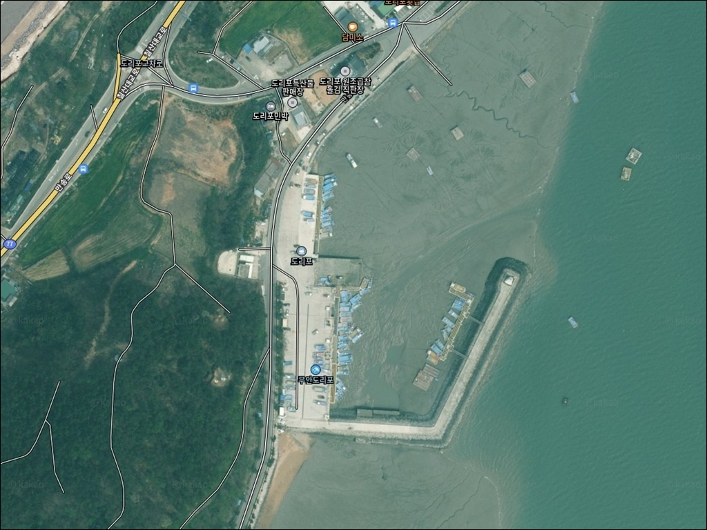
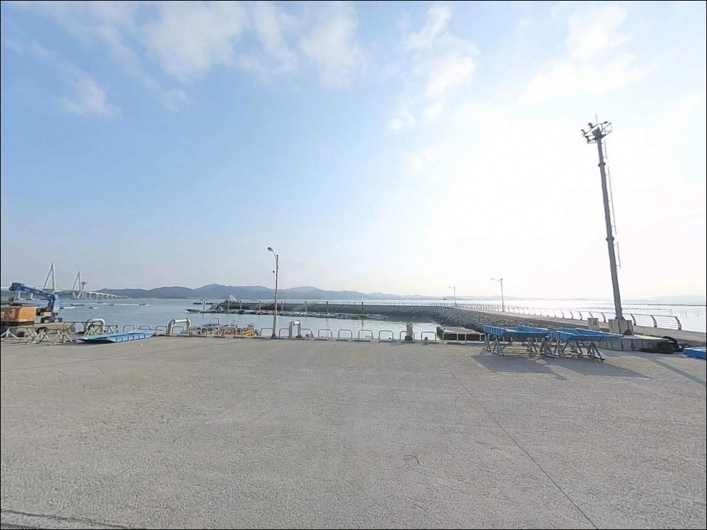
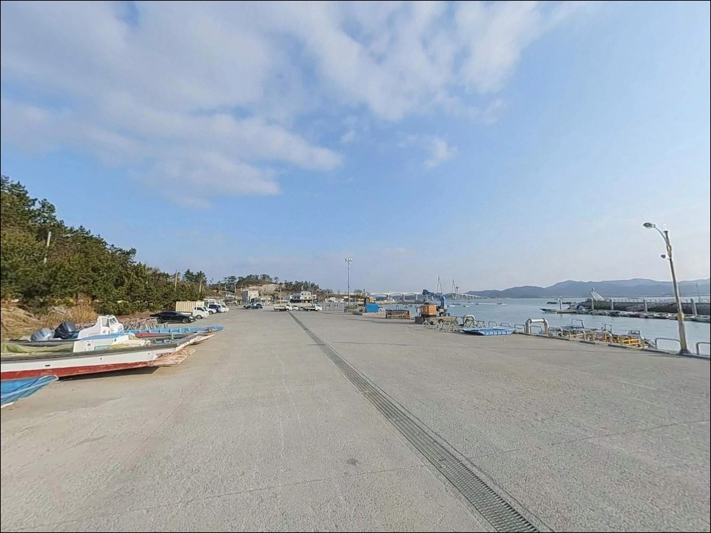
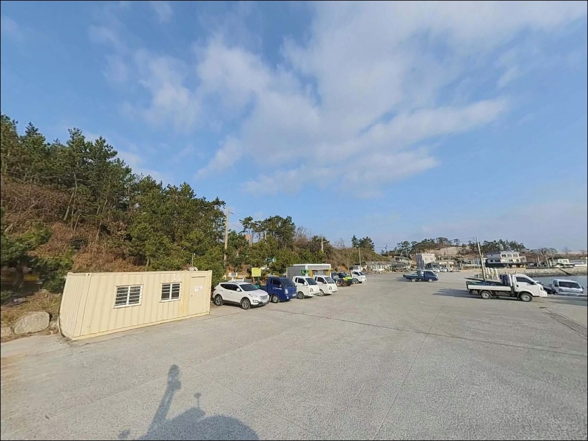
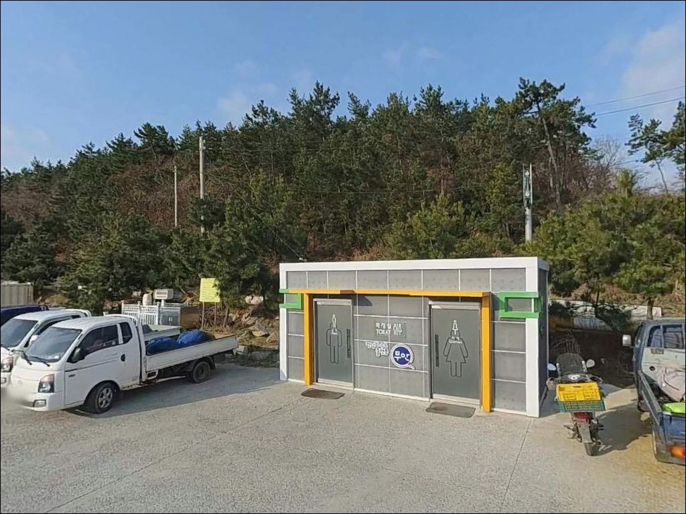
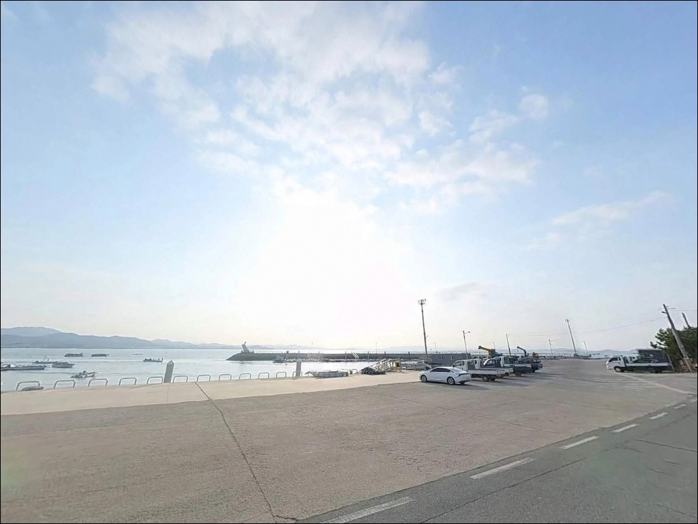
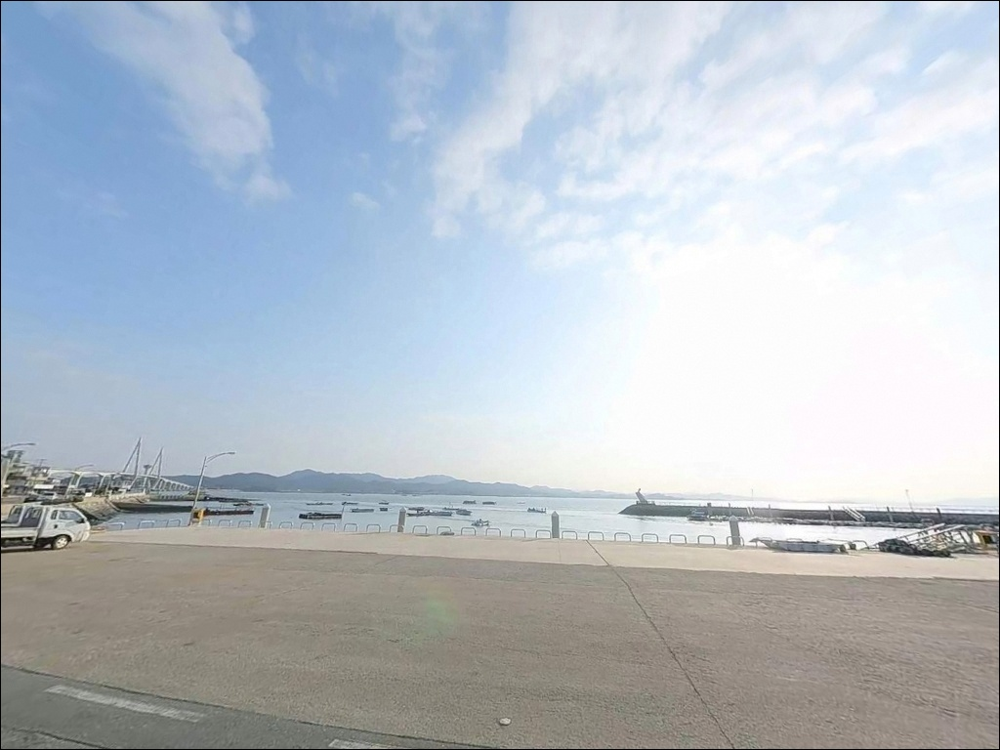
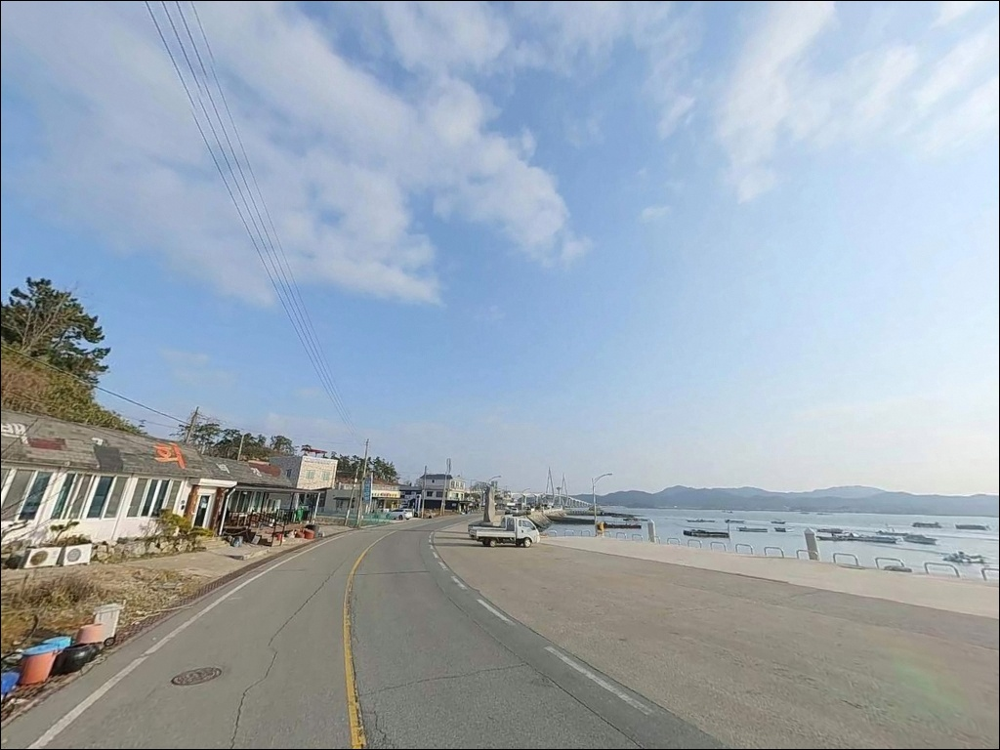
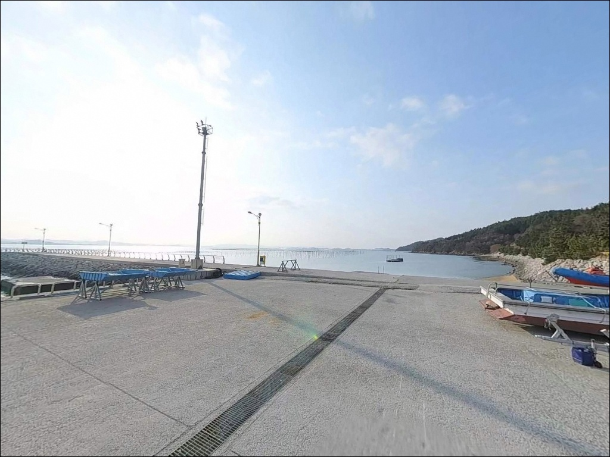

도리포, 전남 무안군 한적한 분위기 속 차박, 낚시를 함께 하기 좋은 곳
이 페이지에는 광고(제휴 링크 포함)가 있으며, 광고 링크를 통해 구매하면 운영자가 판매 수익 또는 수수료를 받을 수 있습니다. 포인트 사진: 카카오맵 스카이뷰·로드뷰. 이 페이지의 지도·사진 이미지는 카카오맵의 실제 서비스 이미지와 다를 수 있습니다.


포인트 안내
도리포
전남 무안군 해제면 송석리 25-19
물때 확인 없이 도리포 방파제에 들어서면,
서해 조수간만의 차이로 간조 직후 수심이 크게 낮아져
어떤 채비를 써도 바닥을 긁는 상황을 맞닥뜨리게 됩니다.
도리포는 함평만 입구에서 칠산바다와 맞닿는
물때 의존도가 높은 서해형 방파제 포인트입니다.
1972년 지방어항으로 지정된 도리포는
해제반도 북서쪽 끝에 자리한 어촌 포구입니다.
아름다운 어촌 100선에 이름을 올린 곳으로,
낙지모양 등대가 세워진 방파제와 솔숲 해변이
한 공간에 어우러진 구조를 갖추고 있습니다.
이 글은 도리포의 진입 여건, 차박 조건,
낚시 방식 적합성에 집중합니다.
조황 단정이나 어종 보장은
이 글의 범위에 포함되지 않습니다.

1. 진입 동선과 포인트 접근성
도리포항은 해제면 소재지 방향 지방도에서
포장도로로 연결되어 있어 진입 자체에 큰 제약은 없습니다.
칠산대교 개통 이후 무안·함평·영광 방향에서
차량 접근이 편해진 지역으로,
항내 공간이 넓어
대형 SUV나 캠핑카도 회차가 가능한 구조입니다.
주차는 포구 내 아스팔트 공터와
선착장 인근 노면 공간을 활용하는 방식이 일반적입니다.
단, 목포수협 무안수산물위판장 앞은
오전 8시 30분과 9시 30분 두 차례 경매가 열리는 구간으로,
이른 아침 경매 시간대에는 중매인 차량으로
주차 공간이 빠르게 채워집니다.
방파제 끝까지 차량이 진입하는 방식은
어선 이동 동선과 겹칠 수 있어
피하는 편이 좋습니다.
낚시 입장 전 선착장 진입 동선을
먼저 확인하는 것이 기본입니다.

2. 차박 환경과 야간 체류 여건
포구 주변에는 위판장과 횟집이 여러 곳 있어
야간에도 어느 정도의 인공조명이 유지됩니다.
해변 뒤편 솔숲 구간은 민가 밀집도가 낮아
포구보다 조용한 분위기가 유지되는 편입니다.
솔바람숲길이 해변을 따라 1km 구간으로 조성되어 있어
낚시를 마친 뒤 하룻밤 머무는 차량이 모이는 곳으로 알려져 있습니다.
해제반도 북서쪽 끝 특성상
외해에서 불어오는 바람 영향을 받는 날이 있습니다.
기상 예보에서 풍속을 미리 확인하고,
바람이 강한 날은 포구 안쪽 방향을
체류 자리로 우선 선택하는 것이 낫습니다.
야영·취사 가능 여부는 현장 여건에 따라 다를 수 있습니다.
허용 여부가 불확실한 구간에서 체류를 계획한다면
도리포에서 차량으로 5분 거리에 있는
무안황토갯벌랜드 국민여가캠핑장을
공식 대안으로 먼저 확인하는 편이 안전합니다.
문의는 061-450-5631입니다.


3. 주변 편의시설 및 인프라 현황
도리포 포구 주변에는 자연산 횟집이 여러 곳 영업하고 있어
낚시를 마친 뒤 현장에서 식사를 해결하기에
나쁜 여건은 아닙니다.
무안군 관광안내소도 포구 인근에 위치해
기본 안내 정보를 현장에서 얻을 수 있습니다.
해제주유소는 해제면 현해로 방향에 위치해
포구에서 이동하면 닿을 수 있는 인프라입니다.
편의점이나 대형 마트는
해제면 소재지 규모상 기대하기 어려운 편이므로,
식수·얼음·낚시 소품은 출발 전에
갖추고 오는 것이 현실적입니다.
응급 상황을 대비해 김태원내과의원이
해제면 현해로 방향에 위치한 것이 확인됩니다.
무안읍 방향 이동 시간이 상당하므로
기본 비상약품은 차량에 비치해 두는 편이 좋습니다.

4. 방문 전 반드시 챙겨야 할 준비사항
도리포 방문 전 가장 먼저 확인할 것은 물때입니다.
바다타임에서 도리포 기준 물때를 확인하면
평균해면하가 310cm 수준으로,
서해 포인트 중에서도 조수간만의 차가 큰 구간입니다.
만조 전후 2~3시간이 낚시 입장의 기본 타이밍이며,
간조 직후에는 방파제 끝단 수심이
급격히 낮아지는 시간대입니다.
서해 특성상 기상 변화가 빠르므로
당일 아침 기상청 예보를 다시 한번 확인하는 것이
헛걸음을 막는 기본 조건입니다.
바닥이 개흙과 모래가 혼합된 지형이라
조류 세기에 따라 봉돌 무게 선택이 달라집니다.
여분 채비는 넉넉하게 준비하는 편이 좋습니다.
방파제 외항 테트라포드 구간은
미끄럼 사고 위험이 있는 자리입니다.
갯바위 전용 신발과 구명조끼는
방파제 진입 시 기본 장비입니다.
야간 낚시를 계획한다면
헤드랜턴과 예비 배터리를 반드시 챙겨야 합니다.

5. 지형으로 읽는 도리포 낚시 여건
도리포는 해제반도 북서쪽 끝에서
함평만과 칠산바다가 맞닿는 지점에 자리합니다.
포구 앞바다 수심은 평균 8~10m 수준이며,
바닥은 개흙과 모래가 혼합된 저질 지형입니다.
방파제 외항 쪽에는 테트라포드가 형성되어 있고,
내항은 콘크리트와 석축 구조입니다.
함평만 입구에 위치한 지형 특성상
물때에 따라 조류 유속이 살아나는 구조입니다.
방파제 끝단은 칠산바다 조류가 맞닿는 구간으로,
만조 전후 물이 들어오는 시간대에
루어 반응이 살아나는 자리입니다.
간조가 깊어지면 방파제 인근 수심이
급격히 낮아지는 시간대가 찾아옵니다.
원투 채비를 멀리 보내도
수심 확보가 어려운 상황이 생기므로,
만조 전후 2~3시간을 집중 공략 구간으로 잡는 것이
이 포인트를 제대로 활용하는 방법입니다.
최신 조황은 출조 전 반드시 검색해 보시기 바랍니다.


6. 물때에 따라 달라지는 낚시 스타일 선택 기준
도리포 지형에서 가장 기본이 되는 낚시는
방파제와 해변을 활용한 원투낚시입니다.
개흙과 모래가 혼합된 바닥 구조는
청갯지렁이나 참갯지렁이를 미끼로 써서
바닥층 어종을 노리기에 적합한 저질 조건입니다.
만조 전후 조류가 살아 있는 타이밍에
멀리 던지는 방식이 이 포인트에 잘 맞습니다.
루어낚시는 방파제 끝단 구간에서 시도해볼 만합니다.
조류 변화가 있는 물때에
미노우 계열이나 지그헤드 채비로
농어와 광어를 탐색하는 스타일이
이 지형 구조와 어울립니다.
소조 구간보다는 중간 물때에
루어 반응이 살아날 가능성이 높습니다.
찌낚시는 방파제 테트라포드 주변 구간에서
시도할 수 있습니다.
목줄채비로 테트라포드 경계선을 공략하면
감성돔이나 숭어를 기대해볼 수 있는 지형 조건입니다.
갑오징어나 주꾸미 에깅은 시즌에 따라
방파제 외항 쪽에서 병행이 가능한 방식입니다.

7. 대안 포인트와 플랜 B 동선
도리포 현장 조류가 너무 빠르거나
포인트가 혼잡할 때 가장 먼저 이동할 대안은
홀통항 또는 홀통해수욕장 인근 선착장입니다.
같은 무안군 해안선에서 접근 가능한 포인트로,
완만한 지형 구조라 원투낚시를 중심으로
운용하기 좋은 편입니다.
칠산대교를 건너 영광 방향으로 이동하면
염산면 일대 포구들을 탐색할 수 있습니다.
도리포와 같은 함해만·서해안 라인에 위치한
대체 출조지들로,
조류 패턴이 유사한 방파제 포인트를
추가로 확인하는 동선이 유효합니다.
차박을 메인으로 계획한 방문이라면
도리포에서 차량 5분 거리의
무안황토갯벌랜드 국민여가캠핑장을
먼저 확인하는 편이 안전합니다.
갯벌체험과 황토찜질 시설을 함께 운영하는
공식 캠핑 시설입니다. (문의: 061-450-5631)

물때 하나가
도리포를 전혀 다른 포인트로 만듭니다
원투낚시나 방파제 루어낚시를 즐기는 낚시인이라면
도리포의 지형 조건은 충분히 시도해볼 만한 구조입니다.
바닥 저질과 방파제 끝단 조류 조건이
복수의 낚시 방식을 동시에 운용하기에
맞는 환경을 갖추고 있습니다.
반면 물때 확인 없이 간조 직후에 도착하거나,
자급 준비 없이 편의시설만 기대하고 오면
낚시 여건과 체류 환경 모두 기대에 못 미칠 수 있습니다.
물때 확인, 자급 준비, 현장 변화 사전 점검,
이 세 가지를 갖추고 간다면
칠산바다 옆 한적한 어촌 포구에서
온전히 낚시에 집중할 수 있는 출조가 됩니다.
솔숲과 해변이 이어지는 도리포에서
방파제 낚시를 마치고 솔바람 소리 속에 하룻밤 머무는 일정이라면,
야영 여건만 미리 확인해두면
낚시와 차박을 함께 챙길 수 있는 출조가 됩니다.